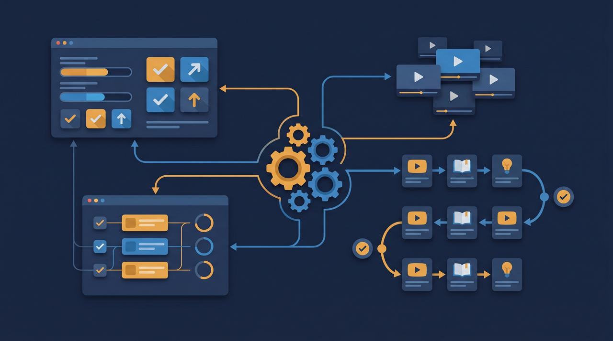
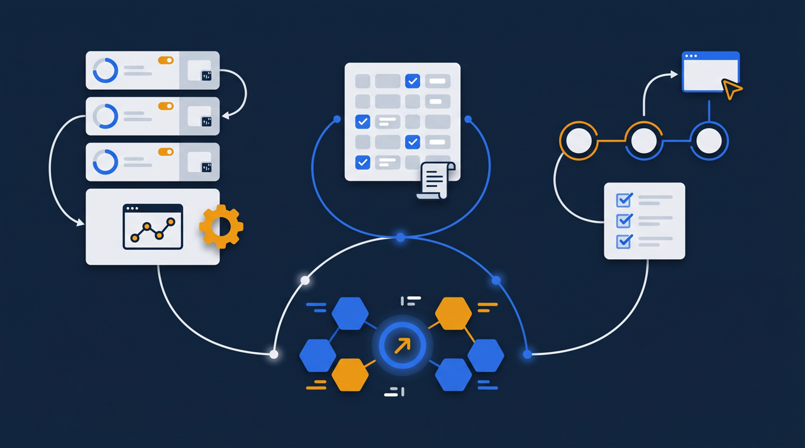
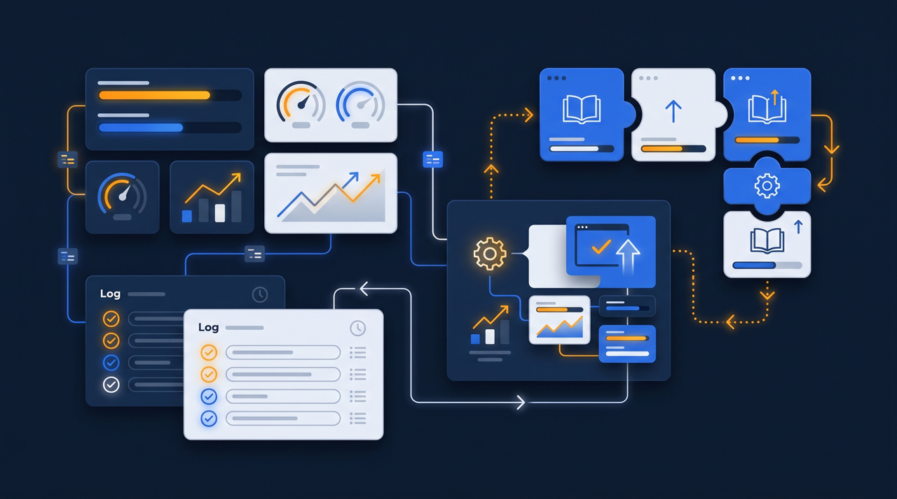

「研修動画なんて、YouTubeの限定公開で配ればいいのでは？」——コストをかけずに始めたい企業ほど、こう考えるのは自然なことですよね。実際、動画を見せるだけなら、それで十分な場面もあります。ただ、運用を続けていくと、いくつかの壁にぶつかることが多いんです。この記事では、YouTubeやGoogleドライブで研修を配る方法のメリットと限界を、学習管理システム（LMS）と比べながら整理します。

YouTube・Googleドライブで研修を配るとは
まず、この方法がどういうものかを整理しておきましょう。研修動画を撮影し、YouTubeに限定公開でアップロードしてURLを社内に共有する、あるいはGoogleドライブに動画ファイルを置いて閲覧リンクを配る——これが、身近なサービスを使った研修配信のやり方です。
何より魅力なのは、手軽さと費用の低さです。すでに多くの会社が使っているサービスなので、新しいツールの契約も、特別な設定もいりません。動画をアップして、リンクを送るだけ。「とにかくまず研修動画を配ってみたい」という段階では、これ以上ない手軽さですよね。
実際、社内向けの簡単な情報共有や、一度見てもらえれば十分という内容なら、この方法で困らないことも多いんです。たとえば、社内イベントの案内動画や、制度変更のお知らせなど、受講管理まで必要のないものは、わざわざ専用システムを使うほうがかえって大げさになります。だからこそ、最初の入口として選ばれやすいわけですね。
加えて、すでに撮りためた動画がある会社にとっては、それをすぐ共有できる身軽さも魅力です。スマホで撮った作業手順の動画を、その日のうちにドライブに上げて現場に共有する、といった機動力は、手軽なサービスならではのものです。「まず動かしてみる」段階では、この速さが何よりありがたいことも多いんですよね。だからこそ、入口としての価値は確かにある、と押さえておきたいところです。
手軽さの裏にある「4つの限界」
ところが、研修として本格的に運用しようとすると、手軽さの裏側にある制約が見えてきます。代表的なものを4つ挙げてみましょう。
1. 誰が見たか分からない
一番大きいのがこれです。YouTubeやGoogleドライブの標準機能では、「誰が・どこまで・いつ見たか」を個人単位で正確に追うことが難しい傾向があります。視聴回数のような大まかな数字は分かっても、「Aさんは最後まで見たか」「Bさんはまだ見ていないか」までは把握しにくい。研修を確実に受けてもらいたい場面では、ここが大きな壁になります。受講を促そうにも、誰が未受講なのか分からなければ、全員に一斉に声をかけるしかありません。すでに見た人にまで催促が届くと、現場からは「もう見たのに」と不満が出ますよね。誰が見たかを追えないことは、受講管理そのものができないことを意味するわけです。
2. 理解度を測れない
動画を見せられても、見た人が内容を理解したかどうかは分かりません。確認テストを別のフォーム作成サービスで用意することはできますが、そうすると動画とテストが別々の場所に分かれ、結果の集計も手作業になります。研修は「見た」だけでなく「身についた」かが大事なのに、その確認に手間がかかってしまうわけです。動画を流し見しただけで「受けた」ことになってしまうと、いざ現場で必要になったときに知識が身についていない、ということも起こり得ます。理解度を測れないというのは、研修の成果が見えないということでもあるんですね。
3. セキュリティの制約
YouTubeの限定公開は、URLを知っていれば誰でも見られる仕組みです。社内で共有したURLが外部に渡れば、社外の人も視聴できる状態になり得ます。IPA（情報処理推進機構）の中小企業向けセキュリティガイドラインでも、情報の取り扱いには相応の管理が求められる旨が示されています。自社のノウハウや顧客情報を含む研修動画では、視聴者を特定・制限できないことがリスクになり得るんですね。たとえば、自社独自の営業トークや製造工程を撮った動画は、競合に見られたくない情報ですよね。そうした内容を、URLさえ知っていれば誰でも見られる場所に置くのは、心配が残ります。誰が見られるかを会社側でコントロールできるかどうかは、研修内容によっては見過ごせない条件になるわけです。
4. 記録が証憑として残らない
研修を行った記録を、後から証明資料として使いたい場面があります。ところが、これらのサービスの標準機能では、受講履歴や受講時間を証憑として出力するのが難しい傾向があります。記録が残らなければ、研修を実施した事実を客観的に示すことができません。現場ではきちんと研修を行っていたのに、それを証明する手立てがない——というのは、後から振り返ると惜しい状況ですよね。実施した事実と、それを示す記録は、セットで初めて意味を持つわけです。現場ではきちんと研修を行っていたのに、それを証明する手立てがない——というのは、後から振り返ると惜しい状況ですよね。実施した事実と、それを示す記録は、セットで初めて意味を持つわけです。

ある中小の製造業では、安全教育の動画をドライブで共有していたものの、いざ受講状況を報告する必要が生じたとき、「誰が見たか」を一人ひとりに口頭で確認して回るはめになった、という話があります。動画を配るところまでは手軽でも、その先の「受けたことを証明する」段階で手間が一気に増えてしまう。これが、無料の手段に頼りきったときに起きやすいことなんです。
ここで大事なのは、これらの限界は「手軽さの代償」だという見方です。誰でもすぐ使える設計だからこそ、受講者を細かく特定したり、視聴を厳密に記録したりする仕組みは、あえて持っていないんですね。つまり、欠陥ではなく、そういう用途のために作られていない、ということです。だからこそ、研修に管理や記録を求める段階になったら、その目的に作られた別の仕組みに目を向ける——という発想が自然なんです。手軽な手段を責めるのではなく、求めるものが変わったら手段も見直す、と捉えるとよいですね。
LMSとの違いはどこにあるのか
では、学習管理システム（LMS）を使うと何が変わるのでしょうか。両者の違いを、いくつかの観点で並べてみます。
| 観点 | YouTube・Googleドライブ | 学習管理システム（LMS） |
|---|---|---|
| 導入の手軽さ | すぐ始められる | 設定が必要なことがある |
| 費用 | 基本的に無料 | 利用料がかかることが多い |
| 受講状況の把握 | 個人単位の把握が難しい | 誰がどこまで学んだか記録される |
| 理解度の確認 | 別サービスとの組み合わせが必要 | テスト機能が一体で使える |
| 視聴者の制限 | 制限が限定的 | 受講者を特定して配信できる |
| 記録の証憑化 | 出力が難しい傾向 | 受講記録をデータで出力できる |
この表を見ると、両者は「優劣」ではなく「役割の違い」だと分かりますよね。YouTubeやドライブは、見せることに特化した手軽な手段。LMSは、見せたうえで管理し記録する仕組み。研修に求めるものが「とにかく届ける」ことなのか、「届けて、把握して、記録する」ことなのかで、適した選択肢が変わってくるわけです。
J-Net21などの中小企業向け情報でも、IT活用は目的に応じた手段選びが大切だと繰り返し示されています。手軽だからといって何でも無料サービスで済ませようとすると、かえって後の手間が増えることがある、という点は意識しておきたいところです。
助成金を視野に入れるなら記録が決め手になる
研修費用の支援制度を活用する予定があるなら、この「記録」の差は決定的になります。人材開発支援助成金のように、研修を実施した事実を証明する書類が求められる制度では、誰がいつ、どの研修を、どれだけの時間受けたかという記録が根拠資料になるためです。
YouTubeやGoogleドライブの標準機能では、こうした証憑として使える記録を残すのは難しい傾向があります。動画を配って、現場では受講が進んでいたとしても、それを客観的に証明する記録がなければ、制度の手続きの段階で立ち止まることになりかねません。
一方、LMSであれば、受講履歴や受講時間、修了状況がシステムに記録され、データとして出力できます。研修の中身と、それを証明する記録の両方が揃うので、制度を安心して使えるわけです。助成金の活用を考えているなら、配信の手軽さよりも、記録が残せるかどうかを軸に手段を選ぶことをおすすめします。
賢い使い分けの考え方

ここまで限界を挙げてきましたが、YouTubeやGoogleドライブが「使ってはいけない」わけではありません。大切なのは、目的に応じた使い分けです。
- 受講管理も記録も不要な情報共有 → YouTube・ドライブで十分なことが多い
- 一度見てもらえれば足りる単発の周知 → 手軽な無料手段が向く
- 誰が受けたかを把握したい研修 → LMSが向く
- テストで理解度を測りたい研修 → LMSが向く
- 機密性の高い内容を限られた人に届けたい → LMSが向く
- 記録を証憑として残したい・助成金を使う → LMSが向く
実際の運用では、両方をうまく組み合わせている会社もあります。たとえば、社内の軽い情報共有はドライブで手軽に、正式な研修として記録を残したいものはLMSで、というふうに役割を分けるわけですね。すべてをどちらか一方に寄せる必要はなく、それぞれの強みが活きる場面で使えばよいんです。
判断に迷ったときは、「この研修を、後で誰が・どれだけ受けたか説明する必要があるか」と自問してみるとよいですよ。説明する必要がないなら、手軽な無料手段で十分なことが多いはずです。逆に、上司や取引先、あるいは行政の制度に対して「確かに実施しました」と示す場面が想定されるなら、記録の残る仕組みを選んでおくほうが安心です。この一つの問いだけで、多くの場面はどちらを使うべきか見えてきます。
ところで、無料の手段から始めて、運用が本格化したタイミングでLMSへ移行する、という流れも自然です。最初は手軽に試し、受講管理や記録の必要性が高まってきたら、仕組みのある手段に切り替える。この段階的な進め方なら、最初から大きく投資せずに、自社に必要なものを見極めていけます。
まとめ：手段は「研修に何を求めるか」で選ぶ
YouTubeの限定公開やGoogleドライブでの研修配信は、手軽で費用もかからない、優れた入口です。受講管理や記録が不要な情報共有なら、これで十分なことが多いでしょう。一方で、誰が見たか分からない、理解度を測れない、視聴者を制限しにくい、記録が証憑として残らない、という限界があり、研修を本格的に運用しようとすると壁にぶつかりやすくなります。
学習管理システム（LMS）は、これらの限界を埋める仕組みです。受講状況の記録、理解度の測定、視聴者の制限、記録の出力までを一体で扱えるため、研修を制度として運用したい場合や、助成金の活用を視野に入れている場合に向いています。
どちらが優れているという話ではなく、研修に何を求めるかで選ぶべき手段は変わります。まずは自社の研修が「届けば足りる」ものなのか、「届けて、把握して、記録する」必要があるものなのかを整理してみてください。その答えが、最適な配信手段を選ぶ確かな手がかりになります。
よくある質問
動画を見せるだけであれば、手軽で費用もかからない有効な方法です。問題があるというより、向いている場面と向かない場面がある、と捉えるとよいでしょう。受講状況の管理や記録が必要になると、これらのサービスだけでは対応しきれない場面が出てきます。
限定公開はURLを知っている人が視聴できる仕組みで、URLが共有されれば社外の人も見られる状態になり得ます。完全に閲覧者を制限したい場合は、限定公開だけでは不十分なことがあります。機密性の高い研修内容では、視聴者を特定できる仕組みのほうが安心です。
YouTubeやGoogleドライブの標準機能では、個人単位で「誰が・どこまで・いつ見たか」を正確に把握することは難しい傾向があります。視聴回数などの大まかな数字は分かっても、特定の従業員の受講状況を追う用途には向きません。
別のフォーム作成サービスなどを組み合わせれば、確認テストを用意することは可能です。ただし、動画・テスト・記録が別々のサービスに分かれるため、集計や管理の手間が増えます。これらを一体で扱いたい場合は学習管理システム（LMS）が向いています。
人材開発支援助成金のように研修の実施を証明する書類が求められる制度では、誰がどれだけ受講したかの記録が根拠資料になります。YouTubeやGoogleドライブの標準機能では、こうした証憑として使える記録を残しにくいため、記録を出力できる仕組みを別に用意する必要が出てきます。
受講管理や記録が不要な、情報共有に近い動画ならYouTubeやドライブで十分なことが多いです。一方、受講状況を把握したい、テストで理解度を測りたい、記録を証憑として残したいという場合は、LMSのほうが適しています。目的に応じて使い分けるのが現実的です。